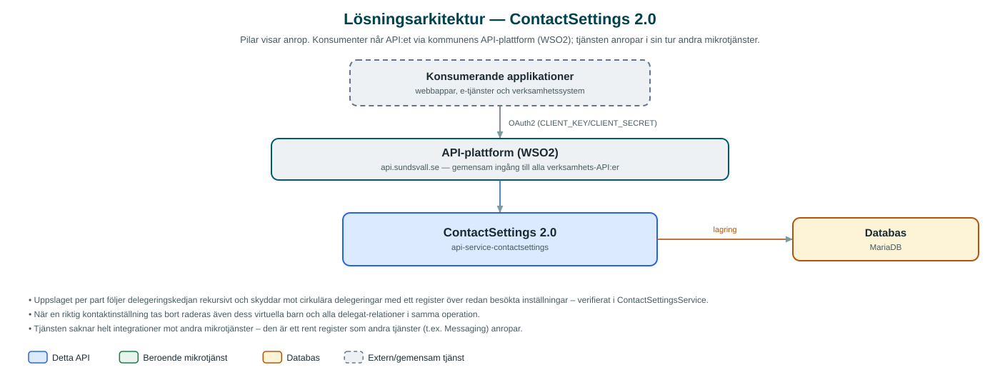

ContactSettings
Register över invånares och företags valda kontaktvägar – används av kommunens meddelandetjänster för att avgöra hur en mottagare vill bli nådd.
Om API:et
ContactSettings håller reda på hur invånare och företag vill bli kontaktade av kommunen. För varje part (partyId) lagras kontaktinställningar med en eller flera kanaler, till exempel sms-nummer och e-postadresser, tillsammans med ett alias per kanal. Andra tjänster – bland annat Messaging – slår upp inställningarna för att välja rätt kanal när ett meddelande ska skickas.
Utöver personliga inställningar stödjer tjänsten virtuella kontaktinställningar, som skapas av en riktig inställning och saknar egen part – de kan användas för till exempel funktionsbrevlådor. Tjänsten hanterar även delegat-relationer: en part kan delegera sin kontakthantering till en annan part, med filter som styr i vilka sammanhang delegeringen gäller.
Vid uppslag per part följer tjänsten delegeringskedjan och samlar in alla kontaktinställningar som matchar angivna filter, så att ett meddelande kan nå både parten själv och dess delegater. Det går också att söka fram vilka inställningar som pekar på en viss destination, till exempel ett telefonnummer eller en e-postadress.
Det här gör API:et
- Kontaktinställningar per part – Skapa, uppdatera, hämta och ta bort kontaktinställningar med kanaler (t.ex. sms och e-post) för invånare och företag.
- Virtuella inställningar – Kontaktinställningar utan egen part kan skapas under en riktig inställning, till exempel för funktionsbrevlådor.
- Delegering – En part kan delegera sin kontakthantering till en annan part; delegeringen förses med filter som styr när den gäller.
- Uppslag med delegeringskedja – Vid uppslag per part följs delegeringskedjan rekursivt och alla matchande kontaktinställningar samlas in.
- Sökning på destination – Hitta vilka kontaktinställningar som innehåller en viss destination, till exempel ett telefonnummer eller en e-postadress.
API-dokumentation
API:ets samtliga resurser, parametrar och datamodeller finns beskrivna i en OpenAPI-specifikation som är hämtad ur källkodsförrådet. Den kan utforskas interaktivt i Swagger UI eller laddas ner som YAML. Programvaruförteckningen (SBOM) listar tjänstens samtliga tredjepartskomponenter med version och licens.
Teknisk dokumentation
Nedan beskrivs hur tjänsten är uppbyggd, vilka andra tjänster den anropar och vad som krävs för att driftsätta den. Informationen är härledd ur källkoden och dess konfiguration på GitHub.
Arkitektur

API:et är en mikrotjänst (Java 25, Spring Boot via kommunens gemensamma tjänsteplattform dept44 (8.0.8), byggd med Maven). Konsumenter når tjänsten via kommunens gemensamma API-plattform (WSO2) på api.sundsvall.se – tjänsten anropas aldrig direkt. Lagring: MariaDB med Flyway-migrationer; kontaktinställningar, kanaler, delegat-relationer och filter lagras här.
Teknikstack
- Språk: Java 25
- Ramverk: Spring Boot via kommunens gemensamma tjänsteplattform dept44 (8.0.8), byggd med Maven
- Databas: MariaDB med Flyway-migrationer; kontaktinställningar, kanaler, delegat-relationer och filter lagras här
- Övrigt: Ingen integration mot andra mikrotjänster – tjänsten är ett fristående register
Beroenden till andra mikrotjänster
Inga anrop till andra mikrotjänster hittades i källkodens konfiguration.
Programvaruförteckning
Tjänsten bygger på 230 tredjepartskomponenter fördelade på 13 olika licenser. Till skillnad från tabellen ovan, som listar andra mikrotjänster, avses här de programbibliotek som ingår i bygget. Se programvaruförteckningen för hela listan.
Konfiguration och driftsättning
- MariaDB-anslutning; databasschemat versionshanteras med Flyway
- Inga beroende mikrotjänster behöver konfigureras
- Anrop görs per kommun – municipalityId ingår i alla API-vägar
Noterbart ur källkoden
- Uppslaget per part följer delegeringskedjan rekursivt och skyddar mot cirkulära delegeringar med ett register över redan besökta inställningar – verifierat i ContactSettingsService.
- När en riktig kontaktinställning tas bort raderas även dess virtuella barn och alla delegat-relationer i samma operation.
- Tjänsten saknar helt integrationer mot andra mikrotjänster – den är ett rent register som andra tjänster (t.ex. Messaging) anropar.
- Delegeringar kan förses med nyckel/värde-filter, och vid uppslag matchas frågans parametrar mot delegeringens filter.
Källkod
Källkoden är öppen och finns hos Sundsvalls kommun på GitHub. I källkodsförrådet finns även instruktioner för att klona, konfigurera och starta tjänsten i egen miljö.